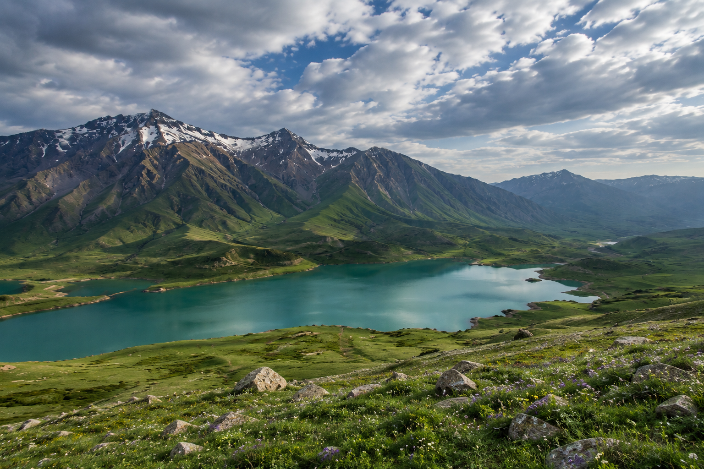
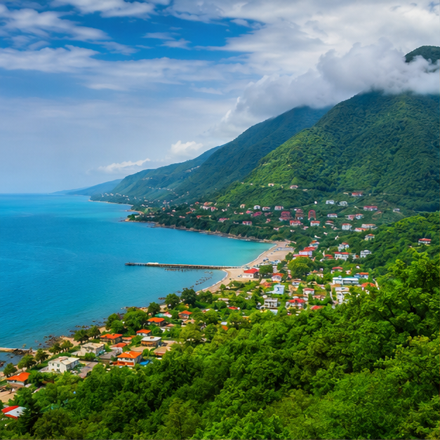
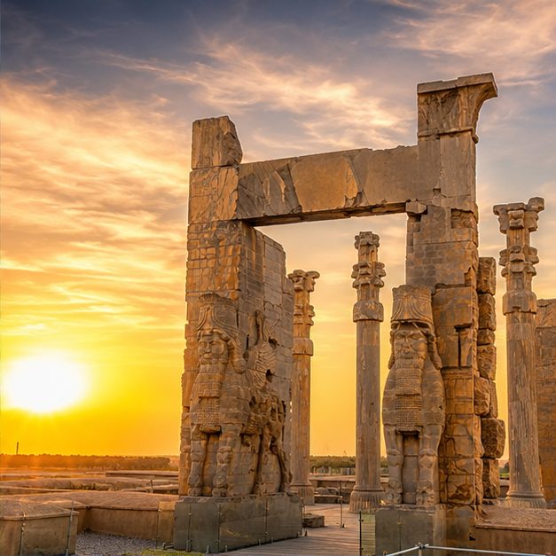
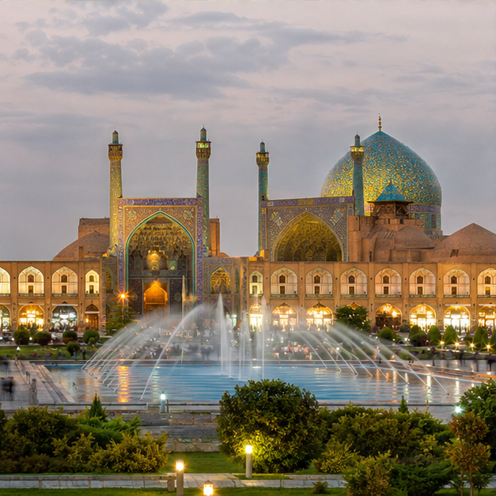
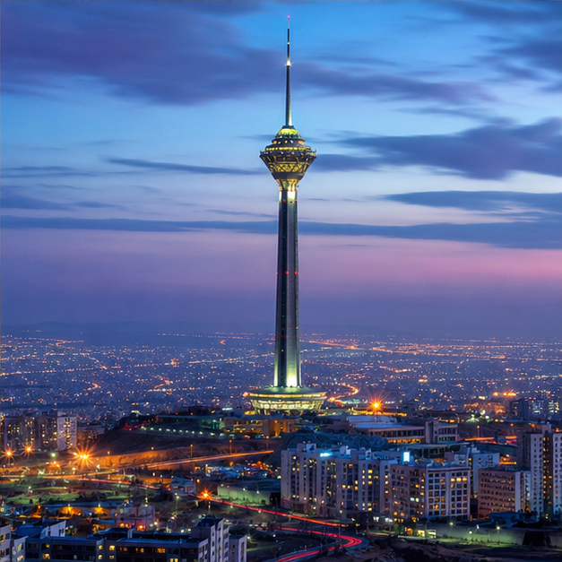

Travel & Photography Blog
Stories & experiences of my trips, along with real photographs I have taken myself from the locations.
Read My Blog →
A journey through the most beautiful and unique locations, discovering and experiencing unforgettable destinations.
Your Guide to Iran and BeyondTravel has the power to change the way we see the world. Every destination offers a new perspective, every culture tells a unique story, and every journey becomes a collection of unforgettable moments.
Here, you'll learn about fantastic locations in Iran, including UNESCO World Heritage Sites, tourist attractions and places beyond the tourist trail. Read authentic travel experiences, captivating photography, search travel agencies and tours, and use an AI photo analyser to check your photos.
WELCOME TO IRANSCAPE
Iran is a country of four seasons, diverse landscapes, rich culture and history. From ancient wonders to natural masterpieces, from snowy peaks of the Alborz Mountains to the golden deserts of Lut, the shores of the Persian Gulf to the lush forests of the north - every corner has something unique to offer.
Start Exploring →
Natural Landscapes

Historical Places

Architecture

Cities
More Than a Destination
Stories & experiences of my trips, along with real photographs I have taken myself from the locations.
Read My Blog →Search and choose the best travel agencies and hotels in different cities.
Search For Agencies →Upload your photo and let AI analyze it.
Try It Now →Iran is one of the largest and most geographically diverse countries in the Middle East, covering approximately 1.65 million square kilometers and ranking as the world's 17th largest country. Traveling across Iran is easier and cheaper than many visitors expect. Thanks to an extensive network of highways, most domestic journeys are made by car, private driver, or long-distance bus, making road trips the most popular way to explore the country.
For longer distances, Iran also has a well-developed railway network connecting many major cities, offering comfortable and scenic train journeys. Domestic flights are available between major destinations for travelers looking to save time.
Traveling in Iran offers excellent value for money. Compared to most European countries, the cost of accommodation, dining, transportation, and sightseeing is significantly lower, making Iran an attractive destination for budget-conscious travelers as well as those seeking luxury experiences at reasonable prices.